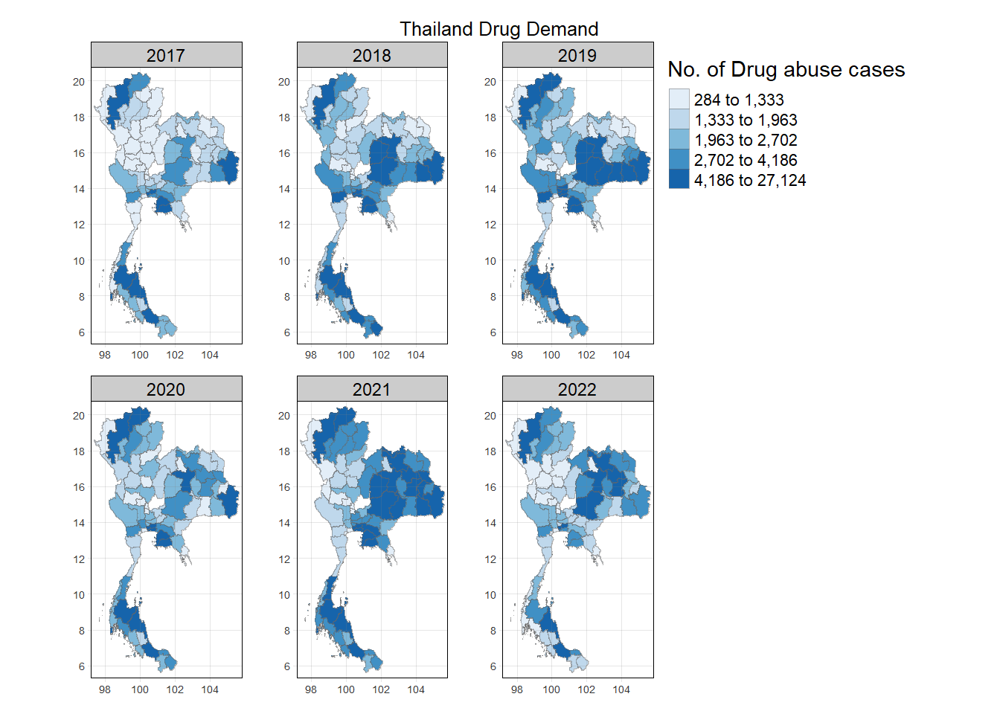
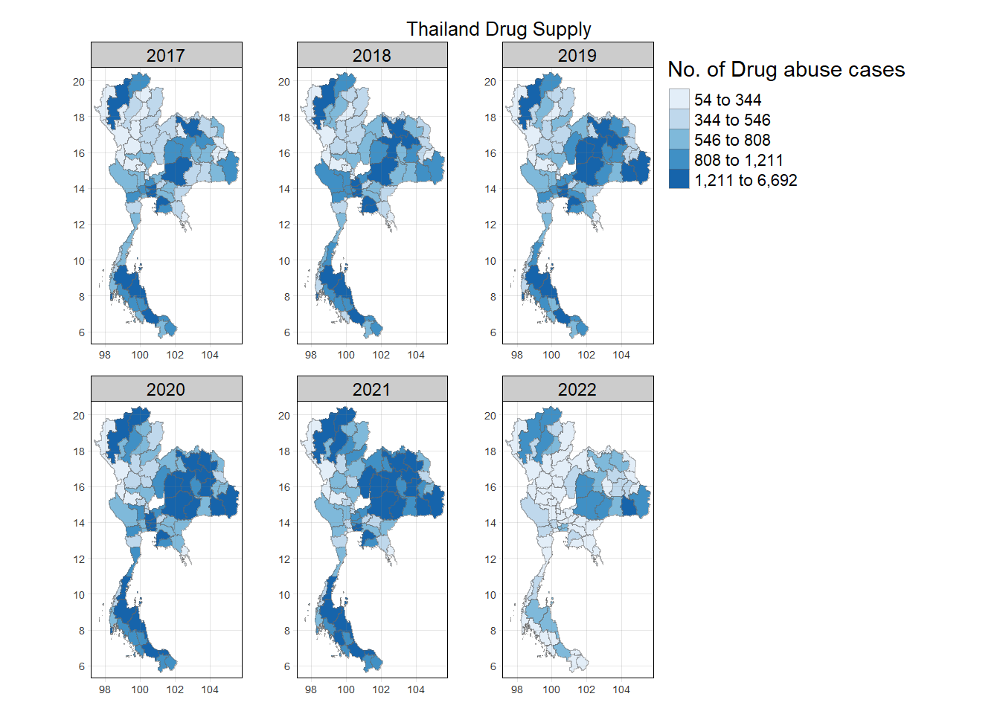
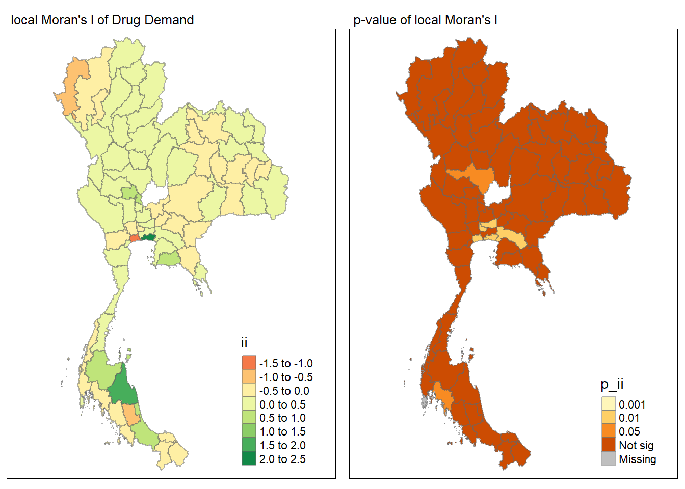
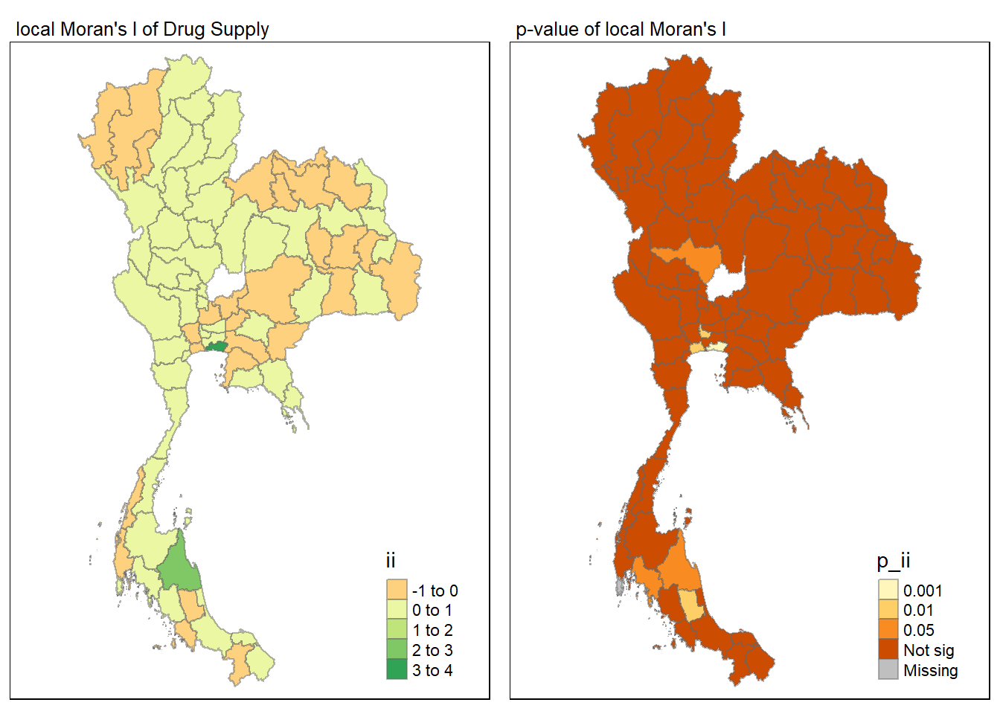
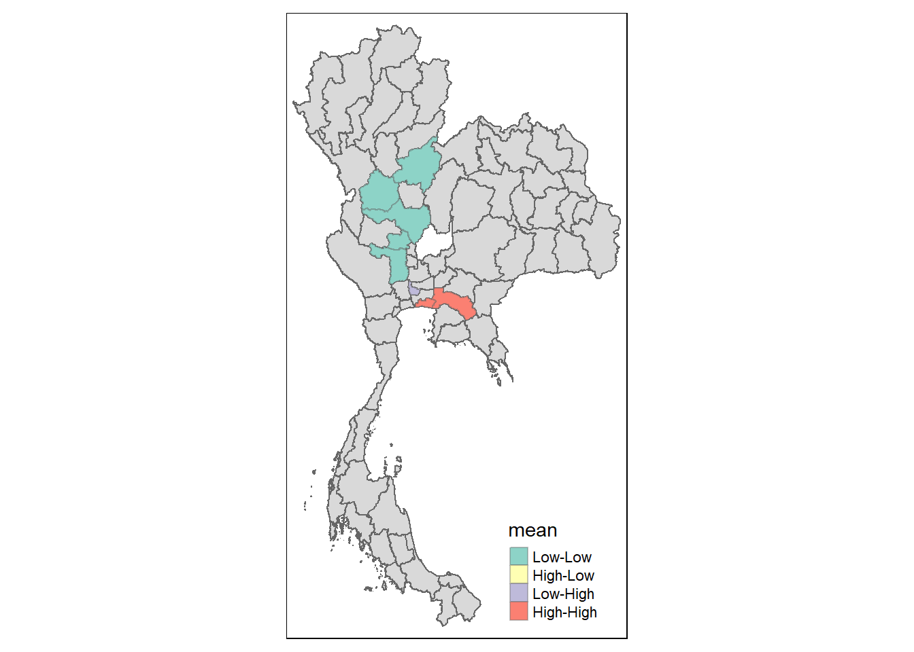
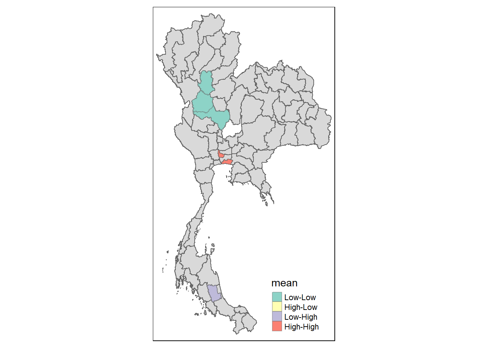

pacman::p_load(sf, tidyverse, sfdep, tmap)Application of Geospatial Analysis Methods to Discover Thailand Drug Abuse at the Province Level
Take-home Exercise 02
1.0 Overview
1.1 Context
Drug abuse is associated with significant negative health, financial and social consequences. Yet, illicit drug consumption remains highly prevalent and continues to be a growing problem worldwide. In 2021, 1 in 17 people aged 15–64 in the world had used a drug in the past 12 months. Notwithstanding population growth, the estimated number of drug users grew from 240 million in 2011 to 296 million in 2021.
The geopolitics of Thailand which is near the Golden Triangle of Indochina, the largest drug production site in Asia, and the constant transportation infrastructure development made Thailand became market and transit routes for drug trafficking to the third countries.
In Thailand, drug abuse is one of the major social issue. There are about 2.7 million youths using drugs in Thailand. Among youths aged between 15 and 19 years, there are about 300,000 who have needs for drug treatment. Most of Thai youths involved with drugs are vocational-school students, which nearly doubles in number compared to secondary-school students.
1.2 Objective
What do we want to find out?
- are drug abuse of Thailand are independent from space?
Spoiler
- Drug abuse demand: Yes, likely to be space independent
- Drug abuse supply: No, likely to be space dependent
1.2 Data
1.2.1 Thailand Drug Offenses [2017-2022] (Aspatial Data)
Thailand Drug Offenses [2017-2022] from Kaggle, an open-sourced data sharing platform.
1.2.2 Thailand - Subnational Administrative Boundaries (Geospatial Data)
We would get our relevant administrative boundary GIS Data from Thailand - Subnational Administrative Boundaries at HDX. Extract out the shape files of admin level 1 (province level).
2.0 Setup
In this assignment, four R packages will be used, they are:
- sf is use for importing and handling geospatial data in R,
- tidyverse is mainly use for wrangling attribute data in R,
- sfdep will be used to compute spatial weights, global and local spatial autocorrelation statistics, and
- tmap will be used to prepare cartographic quality chropleth map.
The following code chunk below is used to install and launch the four R packages.
3.0 Data Wrangling
3.1 Thailand Drug Offenses [2017-2022] Data
3.1.1 Import and prepare Thailand Drug Offenses [2017-2022] Data
In the code chunk below, we read the Thailand Drug Offenses [2017-2022] Data. We also did some light data preparation of the data by removing the province name in Thai.
raw_data <- read_csv("data/raw/thai_drug_offenses_2017_2022.csv") %>%
select(-province_th)3.1.2 Exploratory Data Analysis (EDA)
Using the following code chunk, we are able to do a simple EDA.
unique_types <- unique(raw_data$types_of_drug_offenses)
print(unique_types) [1] "drug_use_cases"
[2] "suspects_in_drug_use_cases"
[3] "possession_cases"
[4] "suspects_in_possession_cases"
[5] "possession_with_intent_to_distribute_cases"
[6] "suspects_in_possession_with_intent_to_distribute_cases"
[7] "trafficking_cases"
[8] "suspects_in_trafficking_cases"
[9] "production_cases"
[10] "suspects_in_production_cases"
[11] "import_cases"
[12] "suspects_in_import_cases"
[13] "export_cases"
[14] "suspects_in_export_cases"
[15] "conspiracy_cases"
[16] "suspects_in_conspiracy_cases" Based on the types_of_drug_offenses we are more interested in the confirmed drug abuse cases, instead of conspiracy and suspected cases, which are likely misinformation, and could lead to an inaccurate conclusion.
3.1.3 Further filtering of data
Using the following code chunk, we will further extract out types_of_drug_offenses that we are interested for investigation and analysis (Removing conspiracy_cases and all suspected cases).
filtered_data <- raw_data %>%
filter(!grepl("suspects", types_of_drug_offenses), types_of_drug_offenses != "conspiracy_cases")Unique fiscal years:[1] 2017 2018 2019 2020 2021 2022Note: We can see from the output above that we are have data spanning over 6 years (from 2017 to 2022).
Unique drug abuse types:[1] "drug_use_cases"
[2] "possession_cases"
[3] "possession_with_intent_to_distribute_cases"
[4] "trafficking_cases"
[5] "production_cases"
[6] "import_cases"
[7] "export_cases" Note: We can see from the output above that we are left with confirmed drug abuse data of seven categories.
We can further combine these seven categories of drug abuse into supply and demand of drugs:
- drug demand (
drug_use_cases,possession_cases,import_cases) - drug supply (
possession_with_intent_to_distribute_cases,production_cases,export_cases)
and we will be filtering out trafficking_cases, as drugs trafficked can be for demand or supply and the distribution of documented drug trafficked is not know as to is it for “import” or “export” purpose.
demand <- raw_data %>%
filter(types_of_drug_offenses == "drug_use_cases" | types_of_drug_offenses == "possession_cases" | types_of_drug_offenses == "import_cases") %>%
group_by(fiscal_year, province_en) %>%
summarise(no_cases = sum(no_cases), .groups = "drop")
supply <- raw_data %>%
filter(types_of_drug_offenses == "possession_with_intent_to_distribute_cases" | types_of_drug_offenses == "production_cases" | types_of_drug_offenses == "export_cases") %>%
group_by(fiscal_year, province_en) %>%
summarise(no_cases = sum(no_cases), .groups = "drop")Note: The above code filter the different
types_of_drug_offensesinto drug demand and supply for each provice at each fiscal year.
3.2 Administrative boundary data
3.2.1 Importing the administrative boundary data
We import the province level data (admin level 1).
boundary = st_read(dsn = "data/raw/admin_boundary",
layer = "tha_admbnda_adm1_rtsd_20220121")Reading layer `tha_admbnda_adm1_rtsd_20220121' from data source
`C:\Users\0seah\SMU\AY24-25 T1\IS415\IS415\Take-Home_Ex\Take-Home_Ex02\data\raw\admin_boundary'
using driver `ESRI Shapefile'
Simple feature collection with 77 features and 16 fields
Geometry type: MULTIPOLYGON
Dimension: XY
Bounding box: xmin: 97.34336 ymin: 5.613038 xmax: 105.637 ymax: 20.46507
Geodetic CRS: WGS 843.2.2 Preparing Data
Doing a simple EDA on the data, we are only interested in the names of the province, so we will just be extracting ADM1_EN out, while dropping the rest of the columns. By removing data that are irrelevant in the current context also reduces the computation time and memory usage required for analysis.
boundary <- boundary %>%
select(ADM1_EN) 3.3 Combining the data
Combine the apatial data and geospatial data
boundary <- boundary %>%
rename(province_en = ADM1_EN)
demand_distribution <- left_join(boundary, demand) %>%
filter(!is.na(fiscal_year))
supply_distribution <- left_join(boundary, supply) %>%
filter(!is.na(fiscal_year))3.4 Choropleth map

Drug abuse demand saw an increasing trend from 2017 to 2022, with its peak during the Covid-19 lockdown period of 2020-2021. The distribution seems to be rather evenly spread and some evidence of spillover can be observed when comparing between each year.

Drug abuse supply, also seem to have an increasing trend from 2017 to 2022, with a peak in 2020-2021 as well. The distribution seem to be abit more concentrated in certain regions, mainly in regions nearer to Thailand’s national borders. Spillover effect is also observed, however the effect is less obvious as compared to drug abuse demand.
Drug abuse fuled by demand and supply, both saw an increasing trend during the Covid-19 lockdown period of 2020-2021. With Drug abuse supply having a darker coloured Choropleth map, indicating that the values within that specific quantile are distributed more heavily toward the higher end of that range. In other words, drug abuse supply are more concentrated within certain areas as opposed to drug abuse demand, which are more evenly spread.
As the year passes, we can see that the drug abuse demand and supply are both shifting towards the border of Thailand, especially the shared border of Thailand and Cambodia, as well as prominent demand and supply near the Thailand and Myanmar border, which also happens to be the time period of the case study we explored in Take-Home Exercise 1.
4.0 Global Measures of Spatial Autocorrelation
4.1 Deriving Queen’s contiguity weights
# sum up the data of each year into one
demand_distribution <- demand_distribution %>%
group_by(province_en) %>%
summarise(no_cases = sum(no_cases), .groups = "drop")
demand_wm_q <- demand_distribution %>%
mutate(nb = st_contiguity(geometry),
wt = st_weights(nb,
style = "W", allow_zero = TRUE),
.before = 1) demand_wm_qSimple feature collection with 75 features and 4 fields
Geometry type: GEOMETRY
Dimension: XY
Bounding box: xmin: 97.34336 ymin: 5.613038 xmax: 105.637 ymax: 20.46507
Geodetic CRS: WGS 84
# A tibble: 75 × 5
nb wt province_en no_cases geometry
* <nb> <list> <chr> <dbl> <GEOMETRY [°]>
1 <int [3]> <dbl [3]> Amnat Charoen 13831 POLYGON ((104.9598 16.28368, 104.…
2 <int [3]> <dbl [3]> Ang Thong 5702 POLYGON ((100.3329 14.79905, 100.…
3 <int [6]> <dbl [6]> Bangkok 109248 POLYGON ((100.6128 13.9552, 100.6…
4 <int [5]> <dbl [5]> Buri Ram 19387 POLYGON ((102.9303 15.7952, 102.9…
5 <int [8]> <dbl [8]> Chachoengsao 21184 POLYGON ((101.0575 13.97627, 101.…
6 <int [4]> <dbl [4]> Chai Nat 4986 POLYGON ((100.1184 15.41258, 100.…
7 <int [3]> <dbl [3]> Chaiyaphum 23302 POLYGON ((101.5601 16.72868, 101.…
8 <int [5]> <dbl [5]> Chanthaburi 12277 MULTIPOLYGON (((102.2515 12.28964…
9 <int [5]> <dbl [5]> Chiang Mai 45070 POLYGON ((99.52369 20.1376, 99.52…
10 <int [3]> <dbl [3]> Chiang Rai 27489 POLYGON ((99.96046 20.46503, 99.9…
# ℹ 65 more rows# sum up the data of each year into one
supply_distribution <- supply_distribution %>%
group_by(province_en) %>%
summarise(no_cases = sum(no_cases), .groups = "drop")
supply_wm_q <- supply_distribution %>%
mutate(nb = st_contiguity(geometry),
wt = st_weights(nb,
style = "W", allow_zero = TRUE),
.before = 1) supply_wm_qSimple feature collection with 75 features and 4 fields
Geometry type: GEOMETRY
Dimension: XY
Bounding box: xmin: 97.34336 ymin: 5.613038 xmax: 105.637 ymax: 20.46507
Geodetic CRS: WGS 84
# A tibble: 75 × 5
nb wt province_en no_cases geometry
* <nb> <list> <chr> <dbl> <GEOMETRY [°]>
1 <int [3]> <dbl [3]> Amnat Charoen 2578 POLYGON ((104.9598 16.28368, 104.…
2 <int [3]> <dbl [3]> Ang Thong 1835 POLYGON ((100.3329 14.79905, 100.…
3 <int [6]> <dbl [6]> Bangkok 26294 POLYGON ((100.6128 13.9552, 100.6…
4 <int [5]> <dbl [5]> Buri Ram 6179 POLYGON ((102.9303 15.7952, 102.9…
5 <int [8]> <dbl [8]> Chachoengsao 4106 POLYGON ((101.0575 13.97627, 101.…
6 <int [4]> <dbl [4]> Chai Nat 1676 POLYGON ((100.1184 15.41258, 100.…
7 <int [3]> <dbl [3]> Chaiyaphum 6999 POLYGON ((101.5601 16.72868, 101.…
8 <int [5]> <dbl [5]> Chanthaburi 2935 MULTIPOLYGON (((102.2515 12.28964…
9 <int [5]> <dbl [5]> Chiang Mai 11554 POLYGON ((99.52369 20.1376, 99.52…
10 <int [3]> <dbl [3]> Chiang Rai 7441 POLYGON ((99.96046 20.46503, 99.9…
# ℹ 65 more rows4.2 Global Moran’s I test
# Replace missing values in `no_cases` with 0
demand_wm_q <- demand_wm_q %>%
mutate(no_cases = replace(no_cases, is.na(no_cases), 0))
global_moran_test(demand_wm_q$no_cases,
demand_wm_q$nb,
demand_wm_q$wt,
zero.policy = TRUE)
Moran I test under randomisation
data: x
weights: listw
n reduced by no-neighbour observations
Moran I statistic standard deviate = 1.8322, p-value = 0.03346
alternative hypothesis: greater
sample estimates:
Moran I statistic Expectation Variance
0.117149906 -0.013698630 0.005100154 # Replace missing values in `no_cases` with 0
supply_wm_q <- supply_wm_q %>%
mutate(no_cases = replace(no_cases, is.na(no_cases), 0))
global_moran_test(supply_wm_q$no_cases,
supply_wm_q$nb,
supply_wm_q$wt,
zero.policy = TRUE)
Moran I test under randomisation
data: x
weights: listw
n reduced by no-neighbour observations
Moran I statistic standard deviate = 2.6035, p-value = 0.004613
alternative hypothesis: greater
sample estimates:
Moran I statistic Expectation Variance
0.177266989 -0.013698630 0.005380025 4.2 Global Moran’s I permutation test
set.seed(1234)
global_moran_perm(demand_wm_q$no_cases,
demand_wm_q$nb,
demand_wm_q$wt,
zero.policy = TRUE,
nsim = 99)
Monte-Carlo simulation of Moran I
data: x
weights: listw
number of simulations + 1: 100
statistic = 0.11715, observed rank = 94, p-value = 0.12
alternative hypothesis: two.sidedp-value is larger than alpha value of 0.05. Therefore, we do not have enough statistical evidence to reject the null hypothesis that the spatial distribution of drug demand resembles random distribution (i.e. independent from spatial). In other words, we cannot conclude that there is a significant spatial pattern in the distribution of drug abuse demand.
set.seed(1234)
global_moran_perm(supply_wm_q$no_cases,
supply_wm_q$nb,
supply_wm_q$wt,
zero.policy = TRUE,
nsim = 99)
Monte-Carlo simulation of Moran I
data: x
weights: listw
number of simulations + 1: 100
statistic = 0.17727, observed rank = 98, p-value = 0.04
alternative hypothesis: two.sidedp-value is smaller than alpha value of 0.05. Hence, we have enough statistical evidence to reject the null hypothesis that the spatial distribution of drug supply resemble random distribution (i.e. independent from spatial). Because the Moran’s I statistics is greater than 0. We can infer that the spatial distribution shows sign of clustering.
4.3 Findings from Global Moran’s I
From Global Moran’s I permutation test, we found out there is statistical probability that drug abuse supply is spatially dependent, whereas drug abuse demand is not statistical spatially independent. At an alpha value of 0.05. The p-value for the drug abuse supply is small , suggesting a strong evidence against the null hypothesis (of spatial independence). It suggests that the observed data is unlikely to have occurred by chance if the null hypothesis were true.
The findings showing drug abuse demand to be spatially independent and drug abuse supply to be spatially dependent comes at no surprise. As there are multiple potential logical justification to such an observation:
- Demand Factors:
- Individual Choices: Drug abuse is often a personal decision influenced by individual factors such as peer pressure, mental health, and socioeconomic status. These factors may vary widely across different regions, leading to a less concentrated spatial pattern of demand.
- Accessibility: While access to drugs can influence demand, it’s not always the primary factor. Other factors, such as personal beliefs and societal attitudes, can play a more significant role in determining demand.
- Supply Factors:
- Production and Trafficking Networks: Drug production and trafficking often involve organized criminal networks that establish specific routes and locations for their operations. These networks tend to concentrate in areas with favorable conditions for production and distribution, such as remote regions or border areas.
- Law Enforcement Pressure: Law enforcement efforts to disrupt drug supply chains can lead to shifting patterns of production and distribution. This can create spatial dependencies as criminal organizations adapt to changing enforcement strategies.
- Economic Factors: The cost of production and transportation can influence the spatial distribution of drug supply. Areas with lower production costs or better transportation infrastructure may be more attractive to drug suppliers.
- Policy and Regulatory Factors:
- Drug Laws: Variations in drug laws across different regions can impact the availability and distribution of drugs. Stricter laws may lead to more concentrated supply patterns as suppliers seek to operate in areas with more lenient regulations.
- Border Controls: Border controls and customs regulations can influence the flow of drugs across borders. Tightened security measures may lead to more concentrated supply patterns within specific regions.
In conclusion, the observed spatial independence of drug abuse demand and spatial dependence of drug abuse supply can be explained by a combination of factors related to individual choices, criminal networks, economic conditions, and policy interventions. Understanding these factors can help inform effective strategies for addressing drug abuse and related issues.
5.0 Local Measures of Spatial Autocorrelation
5.1 Computing local Moran’s I
demand_lisa <- demand_wm_q %>%
mutate(local_moran = local_moran(
no_cases, nb, wt, zero.policy = TRUE, nsim = 99),
.before = 1) %>%
unnest(local_moran)supply_lisa <- supply_wm_q %>%
mutate(local_moran = local_moran(
no_cases, nb, wt, zero.policy = TRUE, nsim = 99),
.before = 1) %>%
unnest(local_moran)5.2 Visualising local Moran’s I

The drug abuse demand shows statistical significant (low p-value) around the center of Thailand by local Moran’s I, and also in that region there is a high Local Moran’s I value, showing that dispite from the global spatial autocorrection showing statically spatial independence to drug abuse demand. There is possible cases of spatial dependence within certain parts of Thailand.

For drug abuse supply, unlike demand, it is more statistical significant (low p-value) around the southern side of Thailand. As well as a higher Local Moran’s I value in that region as well.
5.3 Plotting LISA map

The drug abuse demand shows a few low-low and high-high in the center region of Thailand. Hence, it shows that, in the center region of Thailand, the drug abuse cases are actually rather similar to their neighbours.

Similar to drug abuse demand, the drug abuse supply shows a few low-low and high-high in the center region of Thailand. Hence, it shows that, in the center region of Thailand, the drug abuse cases are actually rather similar to their neighbours.
Something else that is different is the low-high at the southern region of Thailand. A potential reason could be that enforcement at this region for apprehending drug abuse supplies is weak. Drug suppliers are able to have a higher chance of getting away when doing their trade here. The local authorities is also able to take this information to increase law enforcement for drugs uses, especially to crack down drug supplies.
6.0 Conclusion
No Hot Spot Cold Spot Analysis was performed as from LISA, it is shown that there is virtually no significant amount of High-High, for us to analyse Hot Spots, and for the context of trying to analyse the geographical distribution of drug abuse. We are more inclined to wanting to know more about Hot Spots for the purpose of taking actions at where drug abuse is more prevalent, than the low crime spots.
From the different analysis, we are able to see that drug abuse (both demand and supply) has been increasing throughout the years in Thailand, which are very much aided by global issues like Covid-19, as well as neighbouring tensions outside of Thailand (e.g. Myanmar Civil War and Cambodia political tensions during the same period.)
It came to no surprise that supply is very much statistically significant to be spatially dependent, as supply of drugs usually follow a specific routes that are planned out and executed. Usually leveraging weak points in law enforcement or border control to get the supplies out. While demand on the other hand, is less spatially dependent, as there is no fixed routes or plan for the consumption of drugs.
Regions of Low-Low and Low-High from an increasing drug abuse trend in Thailand, should be viewed as weak points for transporting of drugs. As it is unlikely that, especially for Low-High, with direct neighbours of high drug abuse cases, drug abuse in the region is low. A possible region for Low-High could be that drug abuse goes unnoticed and undocumented.